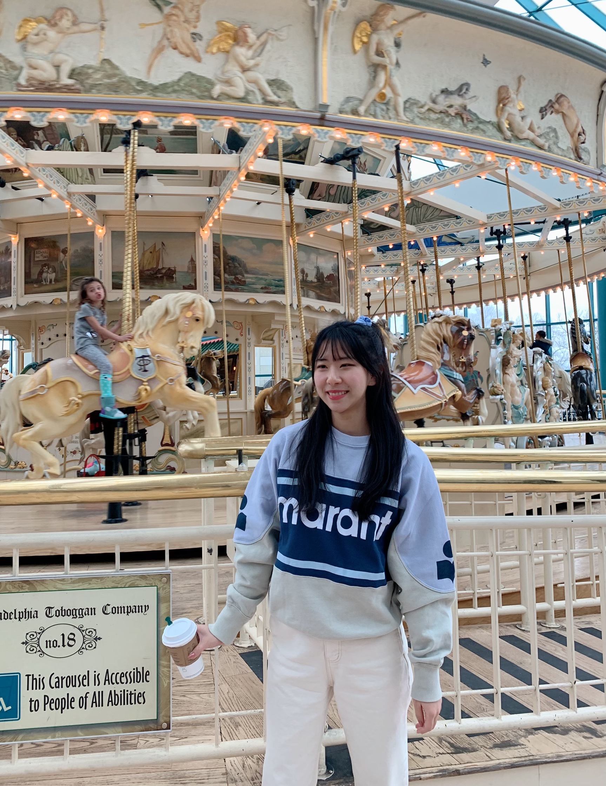

👋🏻 About Me
Hi I'm Jessie! - I'm a sophomore studying Information Science, Systems and Technology at Cornell University College of Engineering. I'm also minoring in Business. My current goal is to work on portfolio and gain industry experience.
I was born and raised in 🇰🇷Seoul, Korea and came to Ithaca for diverse experience with various people. I am very self-motivated and never hesitate to challenge myself! My passion in 😎product design grew after taking student led product design and management course. I love to solve problems through design to bring people delightful and meaningful experience. I also love 💖fashion, desserts, traveling, and dancing. I'm one of your friend who always sings and dances! You can find me dancing on LOKO Cornell Youtube. At school, I am a web designer and developer of Cornell iGEM, digital contents designer at TIPTOE&, social chair of Korean Catholic Community, and dancer of LOKO.
If you would want to chat with me, 📩email me at jk2348@cornell.edu. ✨Have a wonderful day!✨